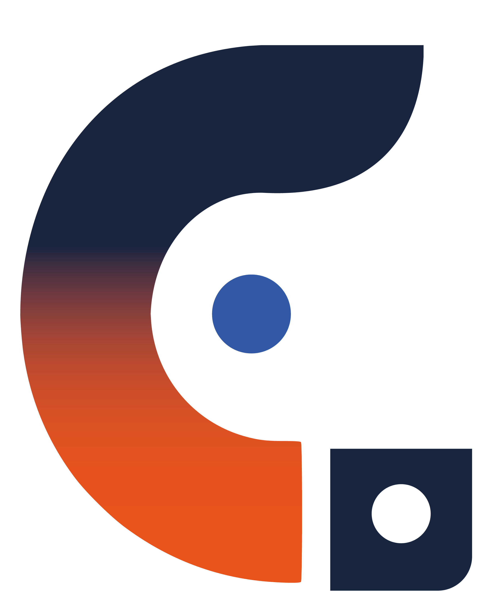

Professor · Designer · Tecnologia
Carlos MagnoPereira
Conecto educação, design e tecnologia para resolver desafios e gerar impacto.

CAMAPE ContatoProfessor · Designer · Tecnologia
Conecto educação, design e tecnologia para resolver desafios e gerar impacto.
Sou professor universitário e da educação técnica, com atuação em Design, Arquitetura, Pedagogia, Tecnologia, Engenharias e Marketing. Organizo conteúdos complexos de forma acessível e os conecto a desafios reais para aproximar teoria e mercado.
Trabalho com metodologias ativas, educação digital e trilhas de aprendizagem para criar experiências práticas e estimular a participação ativa. Com escuta e adaptação, contribuo para o desenvolvimento dos estudantes com clareza, propósito e autonomia.
“Aprender de verdade acontece quando o conteúdo faz sentido.”
Atuação construída entre sala de aula, ambientes digitais, produção de conteúdo e projetos reais.
Professor Substituto · Informática
Condução de projetos integradores e transformação digital.
Docente
Ensino superior em Design, TI, Engenharias, Marketing e áreas correlatas, nos formatos presencial, híbrido e EAD.
Tutor | Mediação e Experiência de Aprendizagem
Mediação ativa em ambiente digital, estímulo ao pensamento crítico, estratégias colaborativas e feedback formativo.
Facilitador · Conteúdos Digitais
Planejamento de conteúdos educacionais, aplicação de ferramentas multimídia e suporte à aprendizagem.
Instrutor de cursos
Cursos técnicos de TI, Marketing, Administração e Vendas, conectando aulas teóricas, práticas e projetos integradores.
UX Writing & Design de Conteúdo
Materiais didáticos, roteiros educacionais, videoaulas e adequação de linguagem para diferentes estudantes.
Diagramador, conteudista e instrutor EAD
Estruturação visual e pedagógica de conteúdos, materiais digitais e aulas para o curso EAD de Fotógrafo.
Analista de Marketing
Planejamento e execução de campanhas digitais, comunicação institucional e posicionamento de marca.
Designer de Ambientes
Desenvolvimento de projetos personalizados de interiores, com atendimento ao cliente e acompanhamento técnico.
Percurso acadêmico multidisciplinar, da docência ao desenvolvimento de soluções e linguagens visuais.
UNIFEI · 2015—2017
Faculdade Paulistana · concluída
Anhembi Morumbi · concluída
Cruzeiro do Sul · 2024—2025
HSM · 2021—2022
Saberes complementares aplicados ao planejamento, à mediação, à comunicação e à produção digital.
Uma seleção de trabalhos em design educacional, conteúdo, interfaces e pesquisa aplicada.
Trilhas de aprendizagem, materiais didáticos e experiências para ambientes presenciais, híbridos e digitais.
Ver projetos educacionais (abre em nova aba)Diagramação, roteiros, produção visual e storytelling para tornar conteúdos complexos mais claros e acessíveis.
Ver projetos de conteúdo (abre em nova aba)Interfaces, jornadas digitais e soluções que aproximam pessoas, informação e aprendizagem.
Acessar projeto de UX (abre em nova aba)Investigação de necessidades, estruturação de jornadas e decisões orientadas à experiência dos usuários.
Acessar estudo completo (abre em nova aba)Estou disponível para projetos educacionais, docência, design de aprendizagem e colaborações.